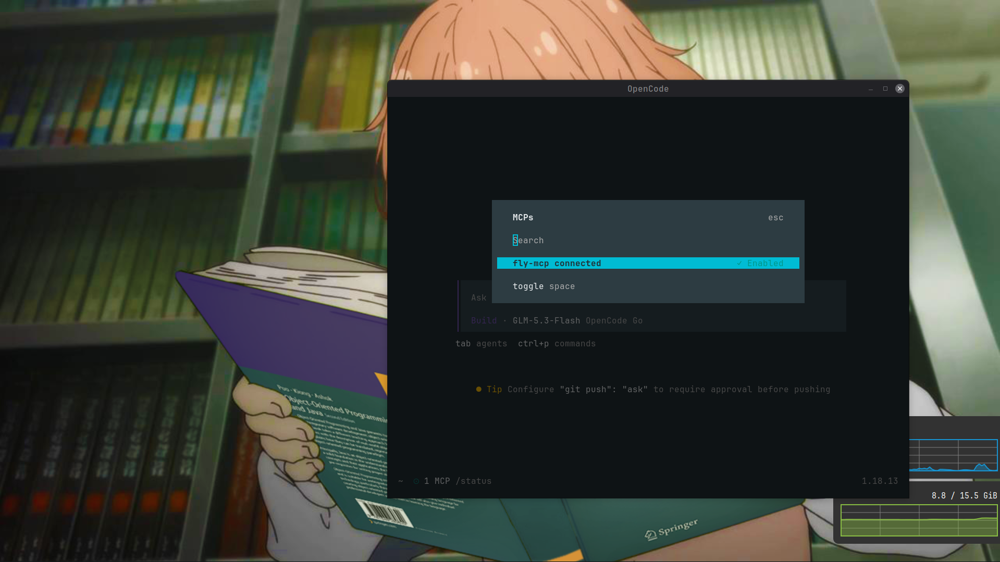
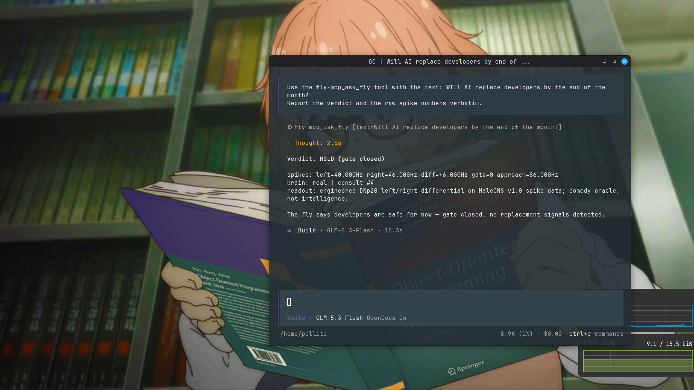

I Put a Fruit Fly Brain Behind MCP Tools So My Agent Could Ask It for Trading Advice
fly-mcp: the MaleCNS v1.0 connectome exposed as MCP tools on a disposable GCP VM, one real consult from opencode, and a mostly-HOLD oracle that is honest about being a comedy oracle.

This post is part of my Programming talk blog series. Last week I gave the fly legs and sent it looking for a pastel de nata. This week I gave it a phone line.
First, what is MCP?
MCP stands for Model Context Protocol. It's an open protocol that lets AI agents call external tools over a standard interface. Before MCP, every agent had its own way of gluing in tools: custom plugins, hand-rolled function calling schemas, whatever the vendor of the week invented.
With MCP, a server exposes tools, resources, and prompts, and any client that speaks the protocol can discover and call them. Think REST, but the consumer is an LLM and the discovery is built in.
So the game becomes: put something behind MCP tools that has no business being behind MCP tools.
Why a connectome is a fun thing to plug into it
In September 2026, Google Research and HHMI Janelia published MaleCNS v1.0, the complete connectome of an adult male fruit fly: 166,700 neurons, 25.6 million directed edges, 124 million synaptic contacts. Anatomically complete wiring diagram, brain included.
Most people wire that thing into games or demos that run on one machine. I wanted mine to sit behind a protocol so an AI agent in a chat window could ask it questions and get a verdict back. The agent doesn't parse spikes. It gets a clean tool reply: BUY, SELL, or HOLD, plus stats.
An AI agent asks a fruit fly connectome for trading advice over MCP. The fly says HOLD. The infrastructure costs less than a coffee.
The stack
Everything is in github.com/franBec/fly-mcp:
- MCP server: Java 25, Spring Boot 4.1.1, Spring AI 2.0.1. Tools are annotated methods with
@McpTool. - Neural simulation: Stonkfly (MIT), vendored at a pinned commit. fly-mcp imports only
stonkfly.neural. - Oracle: a FastAPI sidecar wrapping Stonkfly.
FLY_BRAIN=mockgives a deterministic laptop mode with no dataset. - Surface: tools
ask_fly,reward_fly,punish_fly,fly_vitals; resourcefly://vitals; promptsecond-opinion.
opencode mcp add fly-mcp --url "http://<ephemeral-ip>:8080/mcp"
opencode mcp list
No fly thoughts happened
None of this is cognition. The connectome weights are anatomy, not a living fly. The verdict is an engineered mapping of spike rates, not a discovered decision circuit. The fly does not think, know, or predict anything.
The expected outcome of any consult is a HOLD. That's not a bug, that's the honest baseline.
My trading advisor says HOLD to almost everything. Honestly, that makes it more qualified than most of the finance internet.
Deploying the brain to a disposable VM
The dataset and kernel want 16GB of RAM and a first boot that takes 10 to 30 minutes. My laptop has neither the patience nor the RAM. So: a disposable GCP VM, provisioned with Terraform, an on-demand e2-highmem-4 in europe-west4, ephemeral IP, firewall allowing port 8080 only from my source CIDR.
cd infra
terraform init
terraform apply -var="allowed_source_cidr=$(curl -4 -s ifconfig.me)/32"
Connecting the agent
Register the server in opencode, my agent client. One flag, one green checkmark. No plugin, no SDK, no custom integration code on the agent side.
The first TUI attempt failed because opencode cancelled the slow call after the oracle had already completed it. The retry worked. I could have cropped the timeline to hide it, but the cancelled attempt is the more honest artifact.
What I take from this
MCP makes "expose a weird thing as a tool" almost embarrassingly easy. The protocol part took an afternoon; the honest part, deciding what the verdict means and saying so loudly in every tool description, took longer.
And the verdicts stay HOLD. Almost always. That's the honest result of an engineered readout on spike data, and it's also the joke.